pts = [
{id: 1, x: 1, y: 1}, {id: 2, x: 1, y: 2}, {id: 3, x: 2, y: 1},
{id: 4, x: 8, y: 8}, {id: 5, x: 9, y: 8}, {id: 6, x: 8, y: 9}
];
// Precompute the steps
cents0 = [{x: 1, y: 1, c: "0"}, {x: 2, y: 2, c: "1"}];
asgn0 = pts.map(p => ({...p, c: "-1"}));
asgn1 = pts.map(p => {
let d0 = Math.hypot(p.x - cents0[0].x, p.y - cents0[0].y);
let d1 = Math.hypot(p.x - cents0[1].x, p.y - cents0[1].y);
return {...p, c: d0 < d1 ? "0" : "1"};
});
cents1 = cents0;
cents2 = [
{x: (1+1+2)/3, y: (1+2+1)/3, c: "0"},
{x: (8+9+8)/3, y: (8+8+9)/3, c: "1"}
];
asgn2 = asgn1;
asgn3 = pts.map(p => {
let d0 = Math.hypot(p.x - cents2[0].x, p.y - cents2[0].y);
let d1 = Math.hypot(p.x - cents2[1].x, p.y - cents2[1].y);
return {...p, c: d0 < d1 ? "0" : "1"};
});
cents3 = cents2;
currentAsgn = [asgn0, asgn1, asgn2, asgn3][step];
currentCents = [cents0, cents1, cents2, cents3][step];
Plot.plot({
width: 700,
height: 700,
grid: true,
x: {domain: [0, 10]},
y: {domain: [0, 10]},
marks: [
Plot.dot(currentAsgn, {x: "x", y: "y", fill: d => d.c === "-1" ? "gray" : (d.c === "0" ? "#1f77b4" : "#ff7f0e"), r: 10, stroke: "white", strokeWidth: 1}),
Plot.dot(currentCents, {x: "x", y: "y", fill: d => d.c === "0" ? "#1f77b4" : "#ff7f0e", r: 16, symbol: "star", stroke: "black", strokeWidth: 1.5})
]
})Mathematical Foundations of AI & ML
Unit 5: Clustering and Autoencoders
Prof. Dr. Philipp Pelz
FAU Erlangen-Nürnberg


Where we are in the course
Behind us (Units 1-4):
- Risk minimization with labels: \((x_i, y_i)\) pairs.
- Linear models, generalized linear models, neural networks.
- Optimization (Unit 3) and architectures (Unit 4).
Today (Unit 5):
- The labels disappear: only \(\{x_i\}\) remains.
- Two complementary perspectives on finding structure without labels.
- Classical clustering (K-means, GMM) and neural autoencoders.
Note: backpropagation is self-study this term
- Unit 4 covered the architectures; how networks actually train (the chain rule, vanishing/exploding gradients) is in a self-study supplement.
- See
02_backprop_self_study.qmdin the Unit 4 folder, plus the two example notebooks18.3_Backpropagationand18.5_Python_Implementation. - Today’s autoencoder section uses PyTorch autograd:
loss.backward()handles the gradients. - A short chain-rule warm-up is on the next exercise sheet
The big leap
- All previous units assumed each datapoint comes with a target \(y_i\).
- In practice, most data has no labels: alloy compositions in a database, micrographs from a new sample, spectra from a new instrument.
- We can still ask: what structure is there? What groups together? What axes of variation matter?
- Today’s tools: clustering for discrete structure, autoencoders for continuous structure.
Learning outcomes
By the end of this unit, students can:
- Distinguish supervised vs unsupervised learning and recognize where each fits.
- Run K-means by hand on a small dataset and explain its convergence and failure modes.
- State the GMM likelihood and articulate why EM is needed when latent variables are present.
- Describe the autoencoder architecture and explain why a linear AE recovers PCA.
- Use an autoencoder for two practical tasks: data compression and anomaly detection.
- Anticipate how the latent space sets up Unit 9 (representation learning).
Roadmap of today’s 90 min
- Unsupervised landscape (~10 min) — what counts as “structure”?
- K-means (~15 min) — the workhorse.
- Hierarchical clustering (~5 min) — when you don’t pick \(K\) in advance.
- GMM + EM (~20 min) — probabilistic clustering.
- Autoencoders (~25 min) — the neural counterpart.
- Variants + applications (~10 min) — denoising, compression, anomaly detection.
- Materials examples + bridge to Unit 6 (~5 min).
The unsupervised landscape
- Clustering: assign each \(x_i\) to a discrete group.
- Dimensionality reduction: find low-dim coordinates that summarize \(x_i\).
- Density estimation: model \(p(x)\) directly.
- Generative modeling: sample new \(x \sim p(x)\). (Unit 11 will return here.)
Today: clustering (slides 6-32) and dimensionality reduction (slides 33-58). Density and generation come back in Units 8, 11, 12.
What counts as “structure”?
Compactness
Points within a group are close.
Separation
Groups are far from each other.
Plus: the structure must be interpretable — relate to something we care about (alloy family, defect type, processing regime). A “good” cluster on a materials dataset is one a metallurgist can explain.
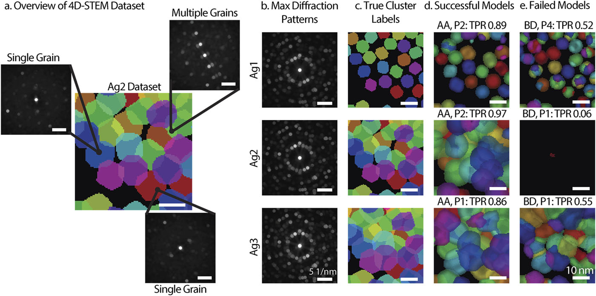
Overview of 4D-STEM with the visual representation of datasets and results. (a) Diagram of the 4D-STEM dataset. (b) Maximum diffraction patterns and (c) true cluster labels for the three simulated datasets, Ag1 (top), Ag2 (middle), and Ag3 (bottom). (d) Example of a successful model for each dataset. (e) Example of a failed model for each dataset. (Bruefach, Ophus, and Scott 2023)
Why unsupervised matters in materials
- Most data starts unlabeled — a database of alloy compositions, a folder of micrographs, a stack of spectra.
- Labels often require expensive characterization (TEM, mechanical testing, EBSD).
- Unsupervised methods let us:
- Explore before committing to a label scheme.
- Compress (1000-channel spectrum → 10 latents).
- Flag anomalies for expert attention before testing them all.
K-means: objective and Lloyd’s algorithm
Assign \(N\) points \(\{x_1, \ldots, x_N\} \subset \mathbb{R}^d\) to \(K\) groups \(C_1, \ldots, C_K\) by minimizing:
\[ J(C_1, \ldots, C_K, \mu_1, \ldots, \mu_K) = \sum_{k=1}^{K} \sum_{x_i \in C_k} \|x_i - \mu_k\|^2. \]
The objective: each point should be close to its assigned centroid. Each cluster is represented by a single point \(\mu_k\).
Lloyd’s algorithm
Alternate two steps until assignments stop changing:
- Assign: for each \(i\), set \(C_k = \{x_i : k = \arg\min_j \|x_i - \mu_j\|^2\}\).
- Update: for each \(k\), set \(\mu_k = \frac{1}{|C_k|} \sum_{x_i \in C_k} x_i\).
This is coordinate descent on \(J\): each step strictly decreases \(J\) unless we are already at a fixed point. Convergence in finitely many steps is guaranteed.
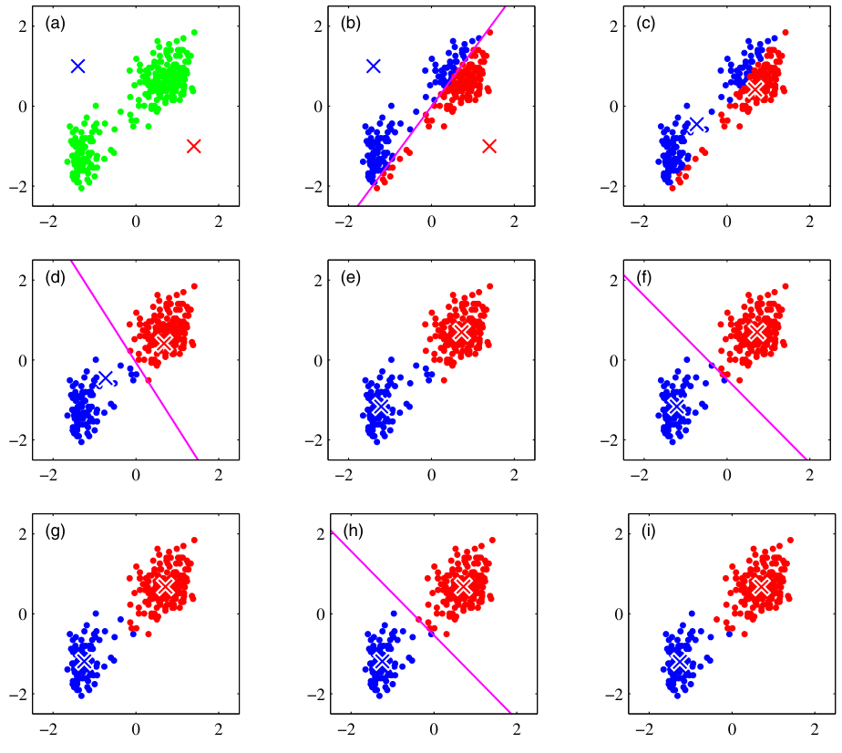
Worked example: 6 points, \(K=2\)
Points: \((1,1), (1,2), (2,1)\), \((8,8), (9,8), (8,9)\).
Initial centroids: \(\mu_1 = (1,1)\), \(\mu_2 = (2,2)\).
Step 0: Initialization.
Step 1: Assign to closest \(\mu\).
Step 2: Update \(\mu\) to cluster mean.
Step 3: Assign (No change).
The bad initialization still found the right clusters here — luck. With harder geometries, initialization matters a lot.
K-means is sensitive to initialization
- Different initial centroids → different local optima.
- Standard fix: multiple random initializations, keep lowest \(J\).
- K-means++: smart initialization.
- Pick first centroid randomly.
- Pick next with probability \(\propto D(x)^2\) to nearest chosen centroid.
- Provably bounds expected \(J\).
initData = {
const n = 100;
let data = [];
const randn = () => Math.sqrt(-2.0 * Math.log(1 - Math.random())) * Math.cos(2.0 * Math.PI * Math.random());
const centers = [{x: 0, y: 0}, {x: 4, y: 0}, {x: 4, y: 3}];
for (let i = 0; i < n * 3; i++) {
const c = centers[i % 3];
data.push({x: c.x + randn()*0.8, y: c.y + randn()*0.8});
}
return data;
}
clusteredInit = {
let trigger = rerunInit;
let data = initData;
let k = 3;
let centroids = [];
if (initMethod === "Random") {
centroids = Array.from({length: k}, () => data[Math.floor(Math.random() * data.length)]);
} else {
// K-means++
centroids.push(data[Math.floor(Math.random() * data.length)]);
for (let i = 1; i < k; i++) {
let dists = data.map(d => {
let minDist = Infinity;
for (let c of centroids) {
let dist = Math.pow(d.x - c.x, 2) + Math.pow(d.y - c.y, 2);
if (dist < minDist) minDist = dist;
}
return minDist;
});
let sumDist = dists.reduce((a, b) => a + b, 0);
let r = Math.random() * sumDist;
let cum = 0;
for (let j = 0; j < data.length; j++) {
cum += dists[j];
if (cum >= r) {
centroids.push(data[j]);
break;
}
}
}
}
let assignments = new Array(data.length).fill(0);
for (let iter = 0; iter < 20; iter++) {
let changed = false;
for (let i = 0; i < data.length; i++) {
let minDist = Infinity, minIdx = 0;
for (let j = 0; j < k; j++) {
let dist = Math.hypot(data[i].x - centroids[j].x, data[i].y - centroids[j].y);
if (dist < minDist) { minDist = dist; minIdx = j; }
}
if (assignments[i] !== minIdx) { assignments[i] = minIdx; changed = true; }
}
if (!changed) break;
let sums = Array.from({length: k}, () => ({x: 0, y: 0, count: 0}));
for (let i = 0; i < data.length; i++) {
sums[assignments[i]].x += data[i].x; sums[assignments[i]].y += data[i].y; sums[assignments[i]].count++;
}
for (let j = 0; j < k; j++) {
if (sums[j].count > 0) {
centroids[j].x = sums[j].x / sums[j].count; centroids[j].y = sums[j].y / sums[j].count;
}
}
}
return {data: data.map((d, i) => ({...d, cluster: String(assignments[i])})), centroids};
}
Plot.plot({
width: 800,
height: 800,
grid: true,
marks: [
Plot.dot(clusteredInit.data, {x: "x", y: "y", fill: "cluster", stroke: "white", strokeWidth: 0.5, r: 5}),
Plot.dot(clusteredInit.centroids, {x: "x", y: "y", fill: (d, i) => String(i), symbol: "star", r: 16, stroke: "black", strokeWidth: 1.5})
],
color: {scheme: "category10"},
axes: false
})Choosing \(K\): the elbow method
- Run K-means for \(K = 1, 2, 3, \ldots, K_{\max}\).
- Plot \(J(K)\) vs \(K\).
- Look for the elbow: the point where \(J\) stops dropping fast.
- Heuristic, not principled, but widely used.
\(J(K)\) always decreases with \(K\) — at \(K = N\), every point is its own cluster and \(J = 0\).
The elbow signals diminishing returns from extra clusters.
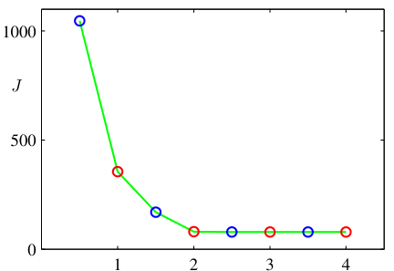
Choosing \(K\): the silhouette score
For each point \(x_i\), define:
\[ s(x_i) = \frac{b(x_i) - a(x_i)}{\max(a(x_i), b(x_i))}, \]
where \(a(x_i)\) is the average distance to other points in \(x_i\)’s cluster, and \(b(x_i)\) is the average distance to points in the nearest other cluster.
- \(s(x_i) \approx 1\): well-clustered. \(s(x_i) \approx 0\): on a boundary. \(s(x_i) < 0\): probably misclustered.
- Pick the \(K\) that maximizes the mean silhouette.
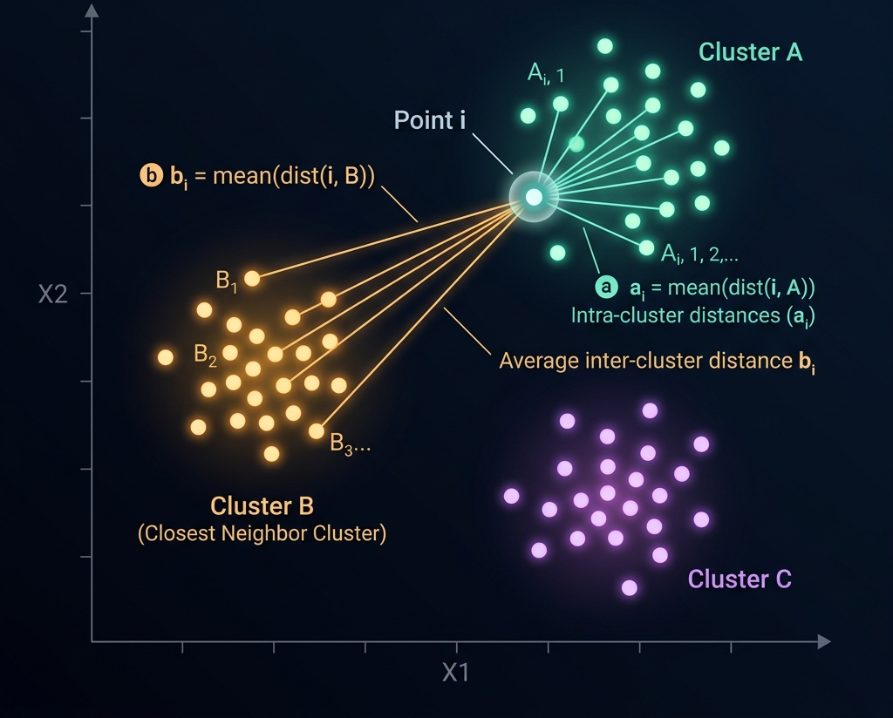
K-means: the spherical assumption
- K-means uses Euclidean distance to a single centroid.
- Implicitly assumes clusters are spherical and equal-sized.
- Fails when:
- Clusters are elongated (Anisotropic).
- Geometry is non-convex (Moons, Rings).
These failure cases motivate GMM (slides 24+).
points = {
let trigger = rerun; // depend on button
const n = 400;
let data = [];
const randn = () => Math.sqrt(-2.0 * Math.log(1 - Math.random())) * Math.cos(2.0 * Math.PI * Math.random());
if (datasetShape === "Blobs") {
const centers = [{x: 0, y: 0}, {x: 5, y: 5}, {x: 0, y: 5}];
for (let i = 0; i < n; i++) {
const c = centers[i % 3];
data.push({x: c.x + randn(), y: c.y + randn()});
}
} else if (datasetShape === "Moons") {
for (let i = 0; i < n/2; i++) {
const t = Math.PI * Math.random();
data.push({x: Math.cos(t) + randn()*0.1, y: Math.sin(t) + randn()*0.1});
data.push({x: 1 - Math.cos(t) + randn()*0.1, y: 1 - Math.sin(t) - 0.5 + randn()*0.1});
}
} else if (datasetShape === "Concentric Rings") {
for (let i = 0; i < n/2; i++) {
const t = 2 * Math.PI * Math.random();
data.push({x: 0.5 * Math.cos(t) + randn()*0.05, y: 0.5 * Math.sin(t) + randn()*0.05});
data.push({x: 1.5 * Math.cos(t) + randn()*0.05, y: 1.5 * Math.sin(t) + randn()*0.05});
}
} else if (datasetShape === "Anisotropic") {
for (let i = 0; i < n; i++) {
const c = (i % 3);
let rx = randn(); let ry = randn();
let rotX = rx * 0.866 - ry * 0.5;
let rotY = rx * 0.5 + ry * 0.866;
if (c === 0) data.push({x: rotX*3 - 4, y: rotY*0.5 - 4});
else if (c === 1) data.push({x: rotX*3, y: rotY*0.5});
else data.push({x: rotX*3 + 4, y: rotY*0.5 + 4});
}
}
return data;
}
// K-means
clusteredData = {
let data = points;
let k = datasetShape === "Concentric Rings" ? 2 : (datasetShape === "Moons" ? 2 : 3);
let centroids = Array.from({length: k}, () => data[Math.floor(Math.random() * data.length)]);
let assignments = new Array(data.length).fill(0);
for (let iter = 0; iter < 20; iter++) {
let changed = false;
for (let i = 0; i < data.length; i++) {
let minDist = Infinity, minIdx = 0;
for (let j = 0; j < k; j++) {
let dist = Math.hypot(data[i].x - centroids[j].x, data[i].y - centroids[j].y);
if (dist < minDist) { minDist = dist; minIdx = j; }
}
if (assignments[i] !== minIdx) { assignments[i] = minIdx; changed = true; }
}
if (!changed) break;
let sums = Array.from({length: k}, () => ({x: 0, y: 0, count: 0}));
for (let i = 0; i < data.length; i++) {
sums[assignments[i]].x += data[i].x; sums[assignments[i]].y += data[i].y; sums[assignments[i]].count++;
}
for (let j = 0; j < k; j++) {
if (sums[j].count > 0) {
centroids[j].x = sums[j].x / sums[j].count; centroids[j].y = sums[j].y / sums[j].count;
}
}
}
return data.map((d, i) => ({...d, cluster: String(assignments[i])}));
}
Plot.plot({
width: 600,
height: 450,
grid: true,
marks: [
Plot.dot(clusteredData, {x: "x", y: "y", fill: "cluster", stroke: "white", strokeWidth: 0.5, r: 5})
],
color: {scheme: "category10"},
axes: false
})K-medoids: a robust variant
- K-means uses the mean as a centroid → sensitive to outliers.
- K-medoids restricts the centroid to be an actual data point (the medoid).
- Update step: in each cluster, pick the point that minimizes the sum of distances to others.
- Slower (no closed-form update) but robust.
Useful when: outliers contaminate the data, or distances are non-Euclidean (e.g., edit distance for SMILES strings).
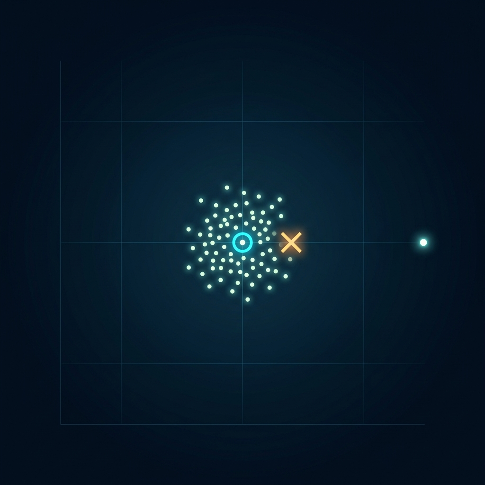
Hierarchical clustering: no \(K\) in advance
- Agglomerative: start with each point as its own cluster; repeatedly merge the closest pair.
- Divisive: start with one big cluster; recursively split.
- Linkage criteria for “closest”:
- Single: nearest pair across clusters (chains).
- Complete: farthest pair (compact).
- Average: mean pair distance.
- Ward: minimize variance increase (popular default).
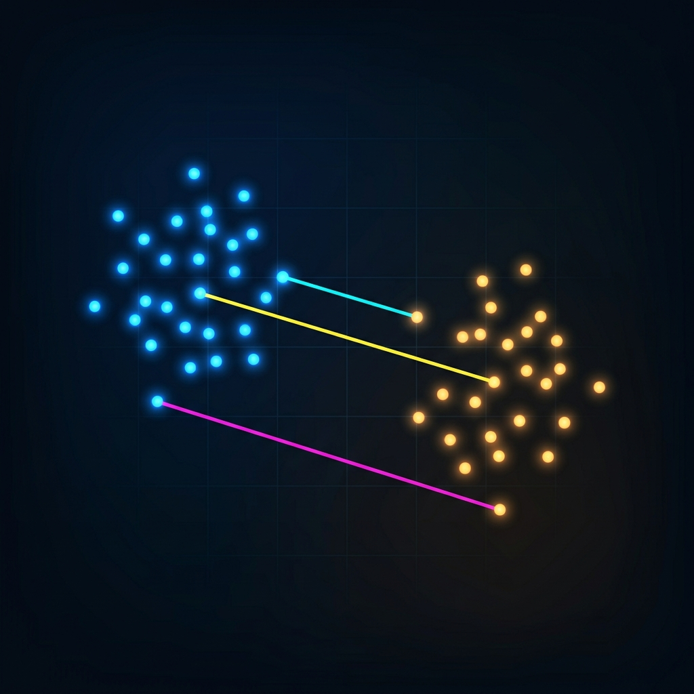
Dendrograms
- The merge sequence is a tree: leaves are points, internal nodes are merges, height = merge distance.
- Cut the dendrogram at any height to obtain a clustering.
- Materials use case: dendrograms over compositions reveal natural alloy families and the heights tell you how distinct each family is.
- Linkage choice matters: single, complete, average, or Ward produce qualitatively different trees.
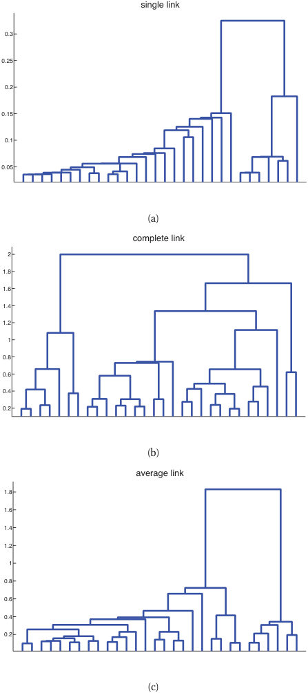
From hard to soft assignments
- K-means gives a hard assignment: each point belongs to exactly one cluster.
- Reality: a point near a boundary could plausibly belong to either neighbor.
- A soft assignment gives a probability over clusters: \(\gamma_{ik} = P(\text{cluster } k \mid x_i)\).
- Soft assignments come naturally from a probabilistic model: the Gaussian Mixture Model.
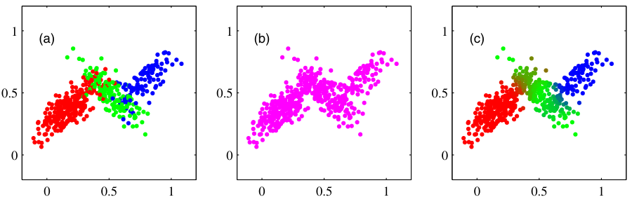
Gaussian Mixture Model (GMM)
A weighted sum of \(K\) Gaussian densities:
\[ p(x) = \sum_{k=1}^{K} \pi_k \mathcal{N}(x; \mu_k, \Sigma_k), \qquad \pi_k \geq 0, \quad \sum_k \pi_k = 1. \]
- \(\pi_k\): mixture weight (prior probability of cluster \(k\)).
- \(\mu_k\): cluster center; \(\Sigma_k\): cluster shape (covariance).
- Each \(\mathcal{N}(x; \mu_k, \Sigma_k)\) is a multivariate Gaussian — Unit 7 will derive these formally.
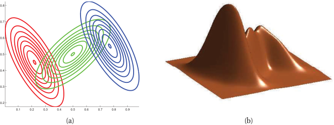
The latent variable view
Introduce \(z_i \in \{1, \ldots, K\}\) — the (unobserved) cluster index for \(x_i\).
\[ p(x_i, z_i = k) = \pi_k \mathcal{N}(x_i; \mu_k, \Sigma_k), \qquad p(x_i) = \sum_k p(x_i, z_i = k). \]
- We observe \(x_i\) and don’t observe \(z_i\).
- Maximizing \(\log p(x_i; \theta)\) directly is hard because it contains a sum inside the log.
- The trick: alternate between guessing \(z_i\) and updating \(\theta\). This is EM.
EM algorithm: E-step
For each point \(i\) and cluster \(k\), compute the responsibility:
\[ \gamma_{ik} = P(z_i = k \mid x_i, \theta) = \frac{\pi_k \mathcal{N}(x_i; \mu_k, \Sigma_k)}{\sum_{j} \pi_j \mathcal{N}(x_i; \mu_j, \Sigma_j)}. \]
This is the soft assignment: how strongly does the model believe point \(i\) belongs to cluster \(k\), given the current parameters?
EM algorithm: M-step
Update parameters using the responsibilities:
\[ \mu_k = \frac{\sum_i \gamma_{ik} x_i}{\sum_i \gamma_{ik}}, \qquad \Sigma_k = \frac{\sum_i \gamma_{ik} (x_i - \mu_k)(x_i - \mu_k)^T}{\sum_i \gamma_{ik}}, \qquad \pi_k = \frac{1}{N}\sum_i \gamma_{ik}. \]
Each update is a weighted average — points contribute to a cluster in proportion to their responsibility.
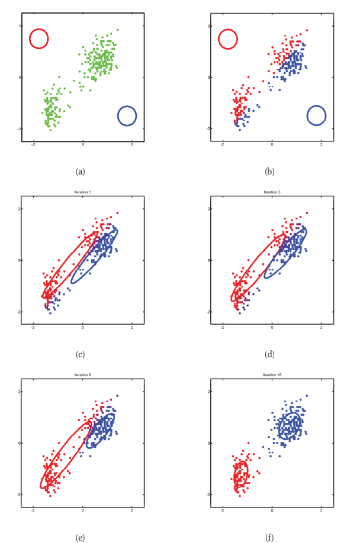
EM as alternating optimization
- Initialize \(\{\pi_k, \mu_k, \Sigma_k\}\) (e.g., from K-means output).
- E-step: compute all \(\gamma_{ik}\) given current parameters.
- M-step: update parameters given current \(\gamma_{ik}\).
- Repeat until log-likelihood converges.
Property: each EM iteration is guaranteed not to decrease the data log-likelihood \(\sum_i \log p(x_i; \theta)\). (Proof: EM optimizes a lower bound on the log-likelihood — Bishop Ch. 9 has the full derivation.)
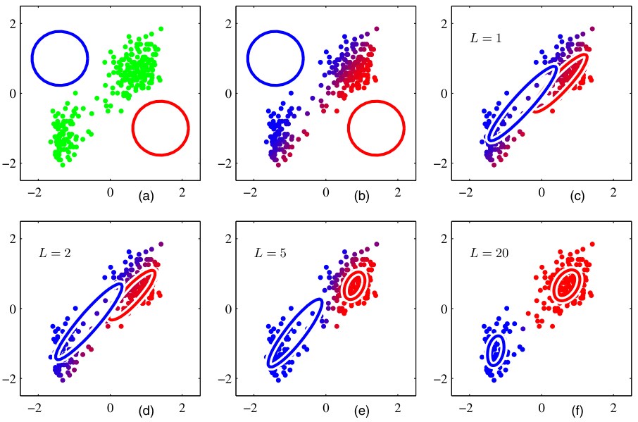
K-means vs GMM
| K-means | GMM | |
|---|---|---|
| Assignment | hard | soft |
| Cluster shape | spherical | ellipsoidal (full \(\Sigma\)) |
| Cluster size | implicit | learned via \(\Sigma\) |
| Output | partition | density |
| Cost | \(O(NKd)\) per iter | \(O(NKd^2)\) per iter |
Rule of thumb: K-means for fast, geometric, well-separated clusters. GMM when clusters overlap, vary in shape, or you need probabilities downstream.
Choosing \(K\) for GMM: BIC
The Bayesian Information Criterion penalizes complexity:
\[ \text{BIC}(K) = -2 \log p(\mathcal{D}; \hat\theta_K) + p_K \log N, \]
where \(p_K\) is the number of free parameters in a \(K\)-component GMM.
- Fit GMMs for \(K = 1, 2, \ldots\), pick the \(K\) minimizing BIC.
- BIC works because GMM has a likelihood. K-means does not — that’s why we used elbow/silhouette there.
Bridge: from centroids to learned representations
- K-means represents each cluster by a single point \(\mu_k\).
- GMM represents each cluster by a distribution \(\mathcal{N}(\mu_k, \Sigma_k)\).
- Both compress the data into a small number of “summary” objects.
- What if we want continuous structure — a smooth low-dimensional surface that describes the data?
That is what an autoencoder learns. The encoder maps \(x\) to a low-dim latent code \(z\); the decoder reconstructs \(x\) from \(z\).
The manifold hypothesis
- High-dimensional data is rarely “filled in” — a 1024-channel spectrum lives in \(\mathbb{R}^{1024}\), but real spectra concentrate on a much lower-dimensional surface (manifold).
- The manifold’s intrinsic dimension is governed by physics (number of phases, processing parameters).
- A linear method (PCA) finds a flat low-dim subspace.
- A nonlinear method (autoencoder) can curve to follow the manifold.
The autoencoder architecture
encoder decoder
x ──────► z (bottleneck) ──────► x̂
R^d R^k (k ≪ d) R^d- Encoder \(f_\phi: \mathbb{R}^d \to \mathbb{R}^k\): compresses input to a code \(z\).
- Bottleneck \(z \in \mathbb{R}^k\): forced low-dimensional representation.
- Decoder \(g_\theta: \mathbb{R}^k \to \mathbb{R}^d\): reconstructs input from code.
- Loss: reconstruction error, typically MSE.
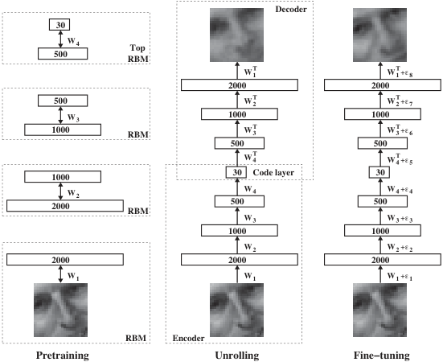
The reconstruction objective
\[ \mathcal{L}(\theta, \phi) = \frac{1}{N}\sum_{i=1}^{N} \|x_i - g_\theta(f_\phi(x_i))\|^2. \]
- No labels — only the inputs themselves serve as targets.
- Minimizing \(\mathcal{L}\) forces the bottleneck \(z\) to retain enough information to reconstruct \(x\).
- Without the bottleneck, the network could just learn the identity. The bottleneck creates a useful constraint.
Linear autoencoder = PCA
Take the simplest possible AE:
\[ f_\phi(x) = W_e x, \qquad g_\theta(z) = W_d z, \qquad W_e \in \mathbb{R}^{k \times d}, \quad W_d \in \mathbb{R}^{d \times k}. \]
Theorem. With MSE loss, the optimal \((W_e, W_d)\) satisfy \(W_d W_e = U_k U_k^T\), where \(U_k\) contains the top-\(k\) left singular vectors of the centered data — i.e., the PCA subspace.
A linear autoencoder is just PCA in disguise.
Why nonlinearity matters
- Linear AEs find the best flat subspace.
- Real data manifolds are usually curved: alloy compositions on a phase diagram, micrographs under varying lighting.
- Adding a nonlinearity (ReLU, tanh) and a hidden layer to encoder and decoder lets the AE bend the latent space.
- Result: a nonlinear AE can capture variance that PCA leaves on the table.
This is the same lesson as Unit 4: nonlinearity is what lets neural networks go beyond linear models.
Choosing the bottleneck dimension \(k\)
- Too small: the AE underfits — reconstruction is bad even on training data.
- Too large: the AE overfits — it just learns the identity through a wide pipe.
- Procedure: sweep \(k\), plot validation reconstruction error vs \(k\), look for the elbow.
- Sanity check: compare to PCA at the same \(k\). Nonlinear AE should do at least as well.
Convolutional autoencoders
For spatial data (images, fields), use convolution:
- Encoder: stack of strided conv → pool blocks (downsample).
- Decoder: stack of transposed conv (or upsample + conv) blocks.
- The bottleneck is now a small feature map.
- Same architectural reasoning as Unit 4: locality + weight sharing.
- Materials uses: micrograph compression, simulation field compression.
Training: autograd handles it
An AE is a standard neural network with a peculiar loss.
PyTorch:
All the backprop machinery (chain rule, gradient flow, Xavier/He init) from the self-study supplement applies here directly.
Denoising autoencoder
Train the AE with corrupted inputs:
\[ \mathcal{L} = \frac{1}{N}\sum_i \|x_i - g_\theta(f_\phi(\tilde x_i))\|^2, \qquad \tilde x_i = x_i + \epsilon_i. \]
- The AE must denoise — recover the clean \(x_i\) from a noisy \(\tilde x_i\).
- Forces the latent code to capture robust features, not noise.
- Practical hyperparameter: noise level. Too low → trivial; too high → unrecoverable.
Sparse autoencoders (briefly)
- Add a penalty that encourages most latent activations to be near zero.
- Forces the AE to use few latent units per input — interpretable, disentangled features.
- Loss: \(\mathcal{L}_{\text{recon}} + \lambda \|z\|_1\) (Lasso-like) or KL penalty against a Bernoulli prior.
Application 1 — anomaly detection
- Train the AE only on normal data.
- At test time, compute reconstruction error per sample.
- Anomalies (defects, instrument failures, novel phases) reconstruct poorly — they’re outside the manifold the AE learned.
- Threshold: choose at, say, the 99th percentile of training reconstruction error.
Short Story: Crystal Defect Detection Prifti et al. (2023) used a Convolutional Variational Autoencoder (CVAE) on Scanning Transmission Electron Microscopy (STEM) images. Trained purely on perfect crystal lattices, the CVAE flags point defects (e.g., vacancies or anti-sites) simply because it fails to reconstruct them. It identifies anomalies without ever seeing a defect during training!
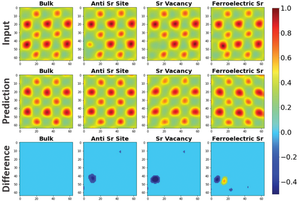
Application 2 — features for downstream tasks
- Train an AE on a large unlabeled corpus.
- Discard the decoder; use the encoder \(z = f_\phi(x)\) as a feature extractor.
- Train a small supervised model (linear regression, MLP) on \(z\) instead of \(x\).
- Works when labels are scarce and the AE has seen enough unlabeled data to learn the manifold.
This is transfer learning with self-supervision — a precursor to today’s foundation models.
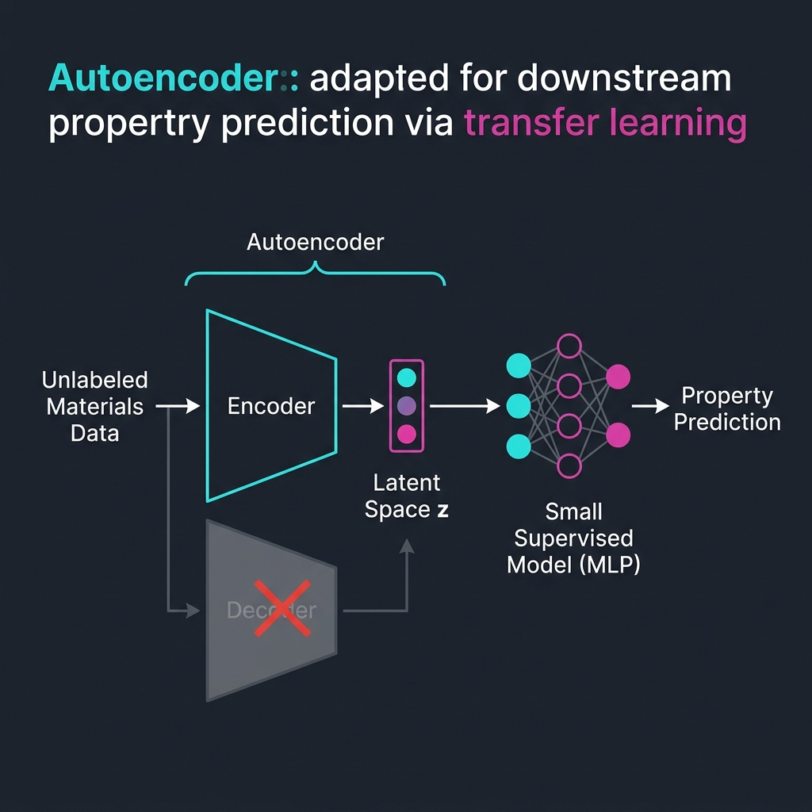
The latent space is a coordinate system
- The bottleneck \(z\) is not just a compression target — it is a learned coordinate system for the data.
- Two questions about a latent space:
- Geometry: how are points arranged? Are similar samples close?
- Interpolation: does the line between \(z_A\) and \(z_B\) correspond to a smooth transition in \(x\)?

Bridge to Unit 9 and Unit 11
- Unit 9: what makes a latent space good? Visualization (t-SNE, UMAP), contrastive learning, foundation embeddings.
- Unit 11: generative models that sample from the latent: VAEs and diffusion.
- Today plants the seed: an AE bottleneck is a learned representation, and learned representations are the substrate for everything that follows.
Materials example 1 — alloy composition clustering
- 5000 alloys, each described by 12 elemental fractions.
- Run K-means with \(K = 8\), k-means++ init, 10 restarts.
- Resulting clusters track known alloy families (austenitic stainless, martensitic stainless, low-alloy steels, …).
- Outliers in each cluster: candidate novel compositions worth lab investigation.
Materials example 2 — spectral compression
- 1D conv autoencoder on 8000 XRD patterns, each with 2000 angular channels.
- Bottleneck 32 → reconstruction error \(< 2\%\) on held-out patterns.
- 60× compression of the dataset.
- Encoder output usable as input to a downstream phase-classifier with 50× fewer parameters.
Materials example 3 — defect anomaly detection
- Train conv AE on micrographs of defect-free material (no labels needed).
- Test on 200 micrographs, including some with cracks, voids, or unusual texture.
- Pixel-wise reconstruction error highlights defect locations as bright spots.
- ROC-AUC > 0.9 for flagging defective images, without ever showing a defect at training time.
Three exam-must-knows
- K-means minimizes the within-cluster sum of squares; convergence is to a local optimum and depends on initialization (use K-means++ + restarts). Spherical clusters only.
- EM for GMM alternates an E-step (compute responsibilities \(\gamma_{ik}\)) and an M-step (weighted update of \(\pi_k, \mu_k, \Sigma_k\)); each step is guaranteed not to decrease the data log-likelihood.
- Linear autoencoder = PCA; nonlinearity + bottleneck generalize PCA to curved manifolds; conv AEs do this for spatial data.
Reading and bridge to Unit 6
Note
Reading for Unit 6. Skim Neuer Ch. 5 (unsupervised) and McClarren Ch. 4 + Ch. 8 to consolidate today’s content. For Unit 6 (Loss Landscapes & Optimization), read Sandfeld’s chapters on gradient descent and ADAM.
Unit 6: now that we have a richer set of objective functions (clustering objectives, reconstruction loss), what does their landscape look like? When does ADAM beat plain gradient descent? Why does flat vs sharp matter for generalization?
Continue
Notebook companion + references
Week 5 notebooks (in example_notebooks/ once added)
- K-means by hand (NumPy) on alloy compositions.
- K-means vs GMM on synthetic Gaussian mixture (sklearn).
- AE on Fashion-MNIST: train, plot 2-D latent, reconstruct.
- AE for anomaly detection: corrupt 5% of test images, threshold reconstruction error, report ROC-AUC.
Self-study supplement (Unit 4): the chain-rule and gradient-flow material is in 04_neural_networks_backprop/02_backprop_self_study.qmd plus the 18.3 and 18.5 notebooks. A short warm-up question on the next exercise sheet uses it.
Learning outcomes — recap
By the end of this unit, students can:
- Distinguish supervised vs unsupervised learning and recognize where each fits.
- Run K-means by hand and explain its convergence and failure modes.
- State the GMM likelihood and intuit the EM algorithm as alternating optimization.
- Describe the autoencoder architecture and explain why a linear AE recovers PCA.
- Use an autoencoder for compression and for anomaly detection.
- Anticipate how the latent space connects to Unit 9 (representation learning) and Unit 11 (generative models).
Bishop, Christopher M. 2006. Pattern Recognition and Machine Learning. Springer.
Bruefach, Alexandra, Colin Ophus, and M. C. Scott. 2023. “Robust Design of Semi-Automated Clustering Models for 4D-STEM Datasets.” APL Machine Learning 1 (1): 016106. https://doi.org/10.1063/5.0130546.
Gómez-Bombarelli, Rafael, Jennifer N Wei, David Duvenaud, José Miguel Hernández-Lobato, Benjamı́n Sánchez-Lengeling, Dennis Sheberla, Jorge Aguilera-Iparraguirre, Timothy D Hirzel, Ryan P Adams, and Alán Aspuru-Guzik. 2018. “Automatic Chemical Design Using a Data-Driven Continuous Representation of Molecules.” ACS Central Science 4 (2): 268–76.
Murphy, Kevin P. 2012. Machine Learning: A Probabilistic Perspective. MIT Press.

© Philipp Pelz - Mathematical Foundations of AI & ML